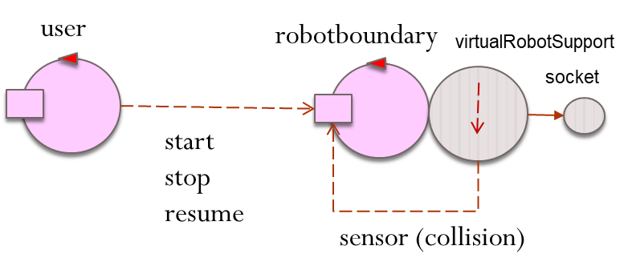
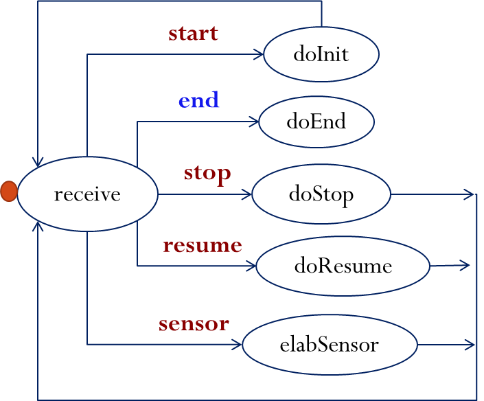

Introduction
In order to experiment with Kotlin actors, we want define an actor that manages a virtual robot working in a empty, rectangular room. The virtual robot is initially located in the left-upper corner of the room (home location).We want to give to the actor a
Requirements
The detailed requirements are:- the actor initially waits for a command start;
- after receiving start, the actor begins its goal-work, by moving along the room boundary, until it reaches the home again;

- while doing its goal-work, the actor must be able to react to the commands stop, by 'immediately' stopping the work;
- while stopped, the actor waits for a commands resume to continue its goal-work from the point reached before stopping.
Requirement analysis
clarify the meaning of names andverbs in the requirement text
- Kotlin actor: the customer intends the entity described in LabIntroductionToKotlin | Actors
- virtual robot: the customer intends the robot described in: LabVirtualRobot | Interacting with a virtual robot
define a formal model of the requirements (and
we will deal with this point later ...functional TestPlans )
Problem analysis
define the
From the logical point of view, our distributed system is composed of two active entities, each conceivable as an actor :logical architecture of the system
The details related to the Virtual robot are hidden within the robotboundary actor and are considered as 'implementation details' at this level.measure the
Since we can exploit the Kotlin actor support, there is no abstraction gap. The effort/resources necessary to build the system are quite limited: we should terminate in half a day, at most.abstraction gap
we will deal with this point later ...refine the functional TestPlansdefine a (first)
now it is easy: we must write the code of the actor robotboundary and a mock actor for the user.product backlog
Test plans
we will deal with this point later ...Project
there is no code without a project, ...
Define the concrete Architecture of the system and the behavior of each component

STRUCTURE : the structure of our logical architecture can be maintained at project level. More details are required to consider the usage of the virtual robot.
INTERACTION : as already stated in the logical architecture, the interaction is asynchronous and based on messages of type 'fire-and-forget', i.e. on message of typedispatch according to our internal standard terminology introduced in: FirstActor | Towards standards in messagingval msgStart = "msg(start ,dispatch,main,robotboundary,none,1)" val msgStop = "msg(stop, dispatch,main,robotboundary,none,1)" val msgResume = "msg(resume,dispatch,main,robotboundary,none,1)" "msg(sensor,dispatch,vr,robotactor,collision_wallXXX,1)"
//is sent by the virtualrobot  BEHAVIOR
The code reported in src/firstSolution/robotboundary0.kt (project it.unibo.kotlin.actorRobot) is a possiblemessage-driven implementation:
if M is the first message in the actor channel, then elaborate M
 end is a self-message, i.e. a message sent by the actor to itself
Testing
A functional testing of the application can be automated by making the variable nStep accessible to the testing unit. For example: src/firstSolution/TestRobotboundary0.ktDeployment
we will deal with this point later ...Maintenance
we will deal with this point later ...A first SPRINT-REVIEW
afterwards, look at the current message M; if it is one of the expected messages in S, change the actor state
The code reported in src/firstSolution/robotboundary1.kt (project it.unibo.kotlin.actorRobot) is a possible
robotboundary |
usermock |
The diagrams show that the robotboundary and the usermock actors constitute a
A first SPRINT-RETROSPECTIVE
Let us list a possible set of improvements related to the software-development process :- messages as representation of AppMsg.kt
- actor behavior as a state machine (message based and not message driven)
- definition of a functional test-plan just after requirement-analysis
- ...